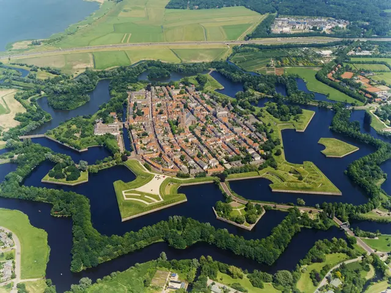
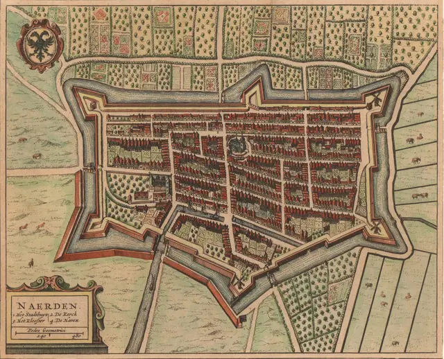

Amthonie
Back homeAbout Naarden, the town I call home

Naarden is one of Europe’s best‑preserved fortress towns, instantly recognisable by its striking star‑shaped layout and the impressive system of double ramparts and moats that encircle it, covering roughly two‑thirds of the town’s entire area. It began as the medieval settlement of Naruthi, which was moved inland around 1350 after suffering heavy damage during the Hoekse and Kabeljauwse factional conflicts and facing increasing threats from the advancing waters of the Zuiderzee. Over the centuries, Naarden developed into a strategic stronghold within the Dutch defensive network, serving a crucial role in the Hollandse Waterlinie as the only land route between the surrounding peat marshes and the sea towards Holland and Amsterdam.

Its history is as dramatic as its silhouette. The darkest chapter came in 1572, during the Dutch Revolt, when Spanish troops massacred the population and tore down the town’s fortifications — an event remembered as the Naarden Massacre. A century later, in 1672, Naarden again found itself at the centre of conflict during the French invasion, after which Stadtholder William III ordered a comprehensive modernisation of the defensive works, creating the formidable fortress that still defines the town today. Further suffering followed in 1813–1814, when Napoleonic French troops refused to surrender Naarden even after the rest of the Netherlands had been liberated. The prolonged siege brought hunger, disease and deep misery to the town, marking one of the most trying moments in its long existence.

The wider surroundings of Naarden offer a varied blend of natural beauty and the characteristic village atmosphere of the Gooi region. Together with Muiden and Bussum, Naarden now forms part of the municipality of Gooise Meren. The boundary between Naarden and its larger neighbour Bussum has become almost invisible since the 19th century, when spatial constraints caused the two places to grow seamlessly into one another.
Immediately beside the fortress lies the Naardermeer, an expansive wetland landscape of open water, marshes, quaking bog and woodland. In 1906, the lake narrowly escaped becoming Amsterdam’s rubbish dump; instead, it was saved and designated the very first protected nature reserve of Natuurmonumenten. The broader Gooi region, with its polders and historic country estates, provides ample opportunities for outdoor recreation.

There is plenty to experience in and around the fortified town, whether you are drawn to culture, history or nature. In the centre, the Great or St Vitus Church rises above the rooftops. Visitors can climb its 45‑metre tower for panoramic views or admire the remarkable 16th‑century wooden barrel vault — often referred to as the “Sistine Chapel of the North”. Within the bastions themselves lies the Dutch Fortress Museum, where you can explore underground casemates and learn more about the waterline’s defensive system. The Comenius Museum, dedicated to the renowned Czech philosopher Jan Amos Comenius and home to his mausoleum, is another major attraction.

For those seeking a more active visit, the town offers numerous ways to explore. You can walk the ramparts, take part in an interactive city game, or venture into nature by joining a whisper boat tour with a ranger on the Naardermeer. Cycling routes through the surrounding polders, woodlands and heathlands offer yet another way to enjoy the varied landscape. Whatever your interests, Naarden combines heritage, tranquillity and natural richness in a way few towns can match.